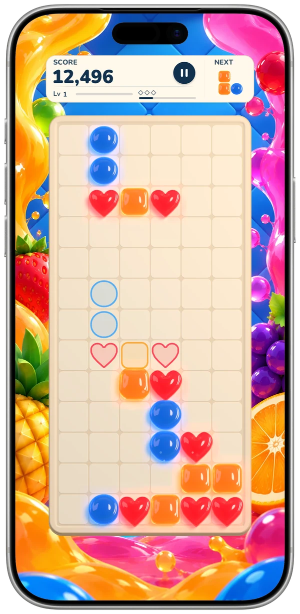
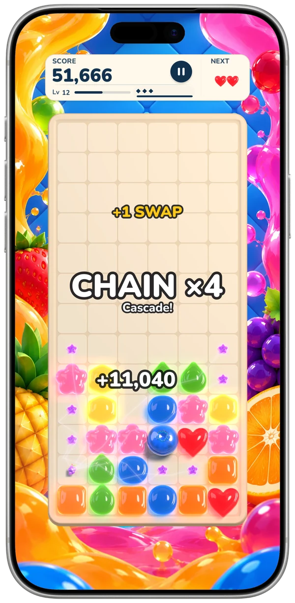
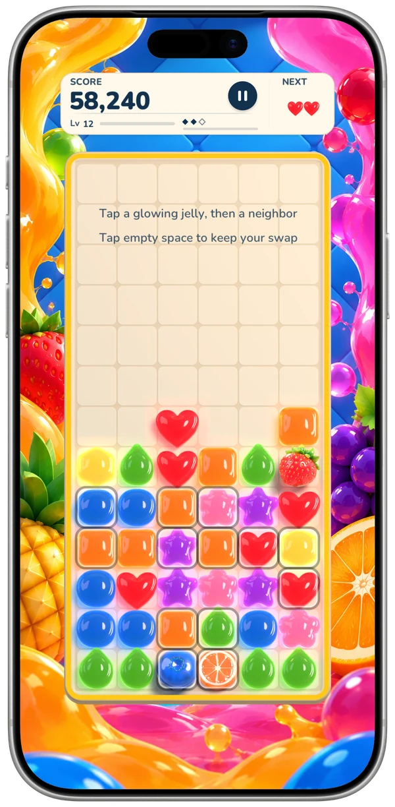
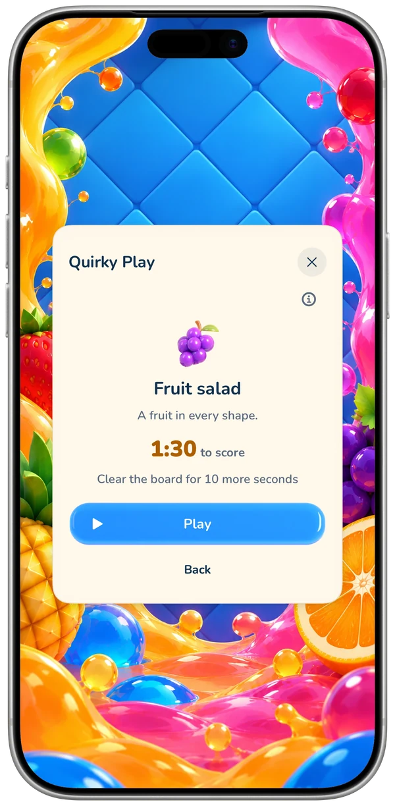
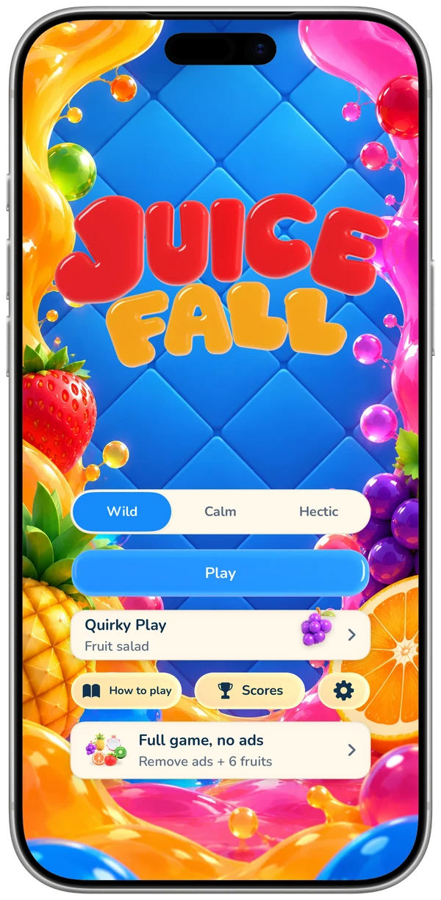
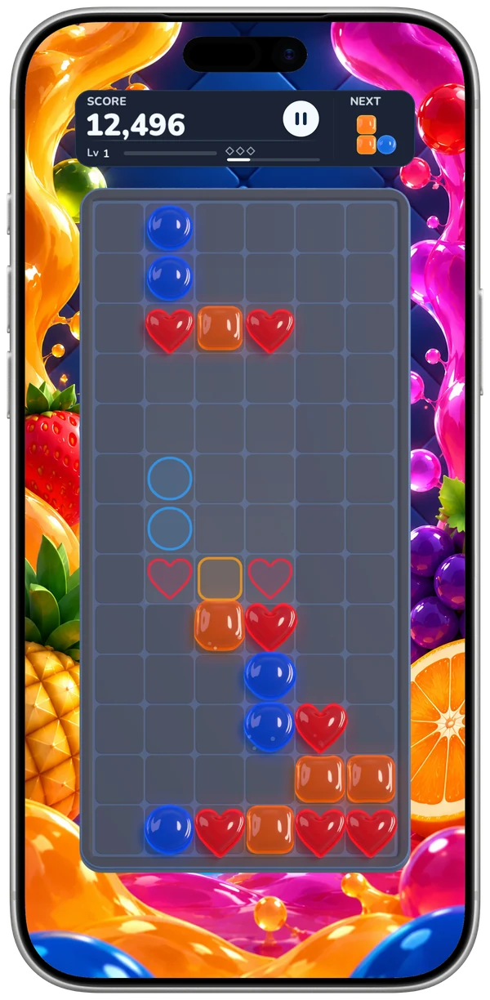
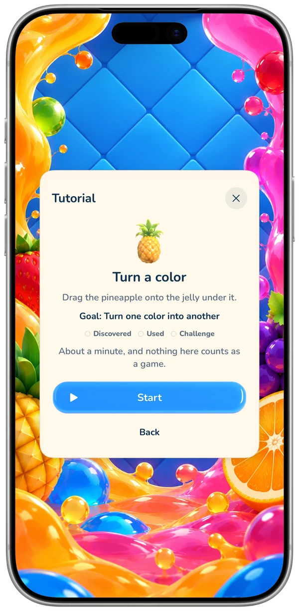
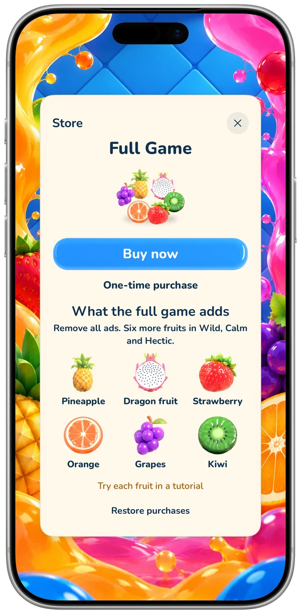

Match colors, not rows.
Juicefall is a falling-jelly puzzle for iPhone. Line up three jellies of one color and they burst into juice, and whatever falls after can match again.
Free with ads · No subscription · Plays offline








Soft jellies, juicy chains
Jelly shapes drop into a narrow well. Slide and turn them, and line up three or more of one color in a row or a column. They burst, the jellies above fall, and a new match sets off the next. Every step of a cascade multiplies your points.
Landings and clears fill the swap meter, and you can bank three swaps. When a shape lands, glowing jellies show every swap that makes a match: tap one, and the chain goes on.
Colors, not rows
Three or more jellies of one color, in a row or a column, burst into juice. Color is what counts, so every drop is a small puzzle.
Cascades that multiply
The jellies above fall straight down and can match again. Every step of a cascade multiplies your points.
Swaps in the bank
Fill the swap meter, bank up to three swaps, and spend one the moment a shape lands to finish a match.
Fruit from matches
Some matches make fruit: a blueberry clears its row and a banana knocks jellies off the board. The full game adds an orange that clears its column, a strawberry that bursts and grapes that take a whole color.
Fuse two fruit
Swap two of a kind together and they fuse into a super fruit, three times as strong. With the full game, two different fruit fuse into a kiwi with both powers, twice as strong.
Wild, Calm or Hectic
Wild speeds up every level. Calm has no gravity: drop each shape when you're ready. Hectic levels up twice as fast and brings freeze diamonds: when a fruit sets one off, the jellies round it freeze for a few seconds.
Quirky Play
A 90-second game with a new quirk each day, the same for everyone. Each board you clear adds 10 seconds.
Made for iPhone
Light and dark, each with its own palette. A Home Screen widget, Siri and Shortcuts, Game Center leaderboards and 27 achievements, and your records kept in iCloud.
For everyone
Every color a shape of its own, VoiceOver actions, six languages. No account, and it plays offline.
Free with ads. One purchase. No subscription.
Wild, Calm, Hectic, Quirky Play and the tutorials come with the download, and so do the blueberry and the banana, with ads: a full-screen one between games, at most every three minutes, and a banner on the card after a game. One purchase, the full game, removes the ads and adds the orange, strawberry, grapes, pineapple, dragon fruit and kiwi to Wild, Calm and Hectic. It is bought once, with Family Sharing.